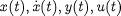
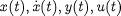
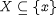

the non-linear model described by

a vector of variable values  on the solution trajectory, i.e. satisfying equation

a set of input variables U; and
a set of output variables Y,
The six cases presented above illustrate the complexity of what is, at first sight, a rather simple problem. The required analysis is performed automatically by gPROMS and is completely transparent to the user. The overall specification of the new facility is as follows:
Given:
the non-linear model described by
a vector of variable values  on the solution trajectory, i.e. satisfying equation
a set of input variables U; and
a set of output variables Y,
Determine:
the minimal set of states  ; and
the matrices A, B, C and D.